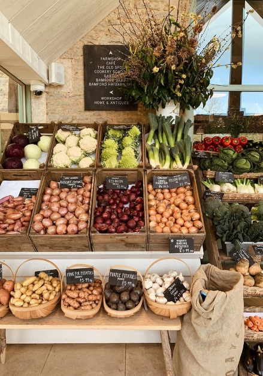
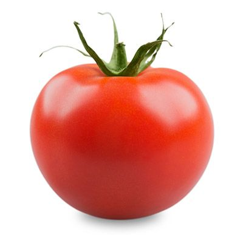
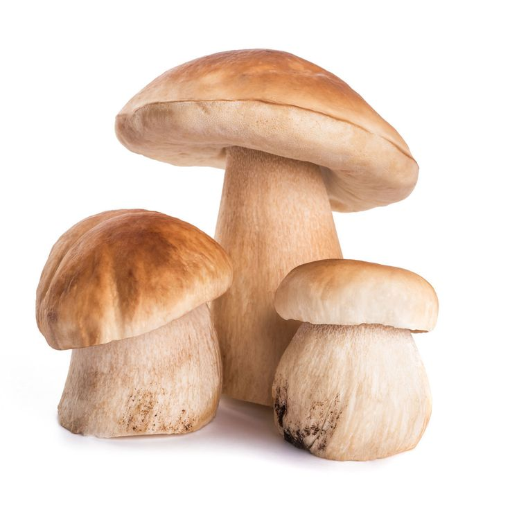
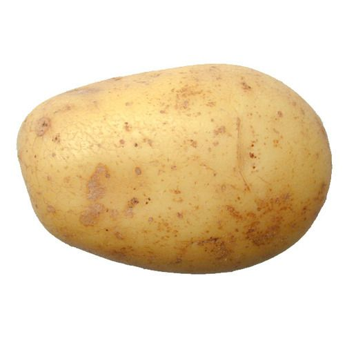
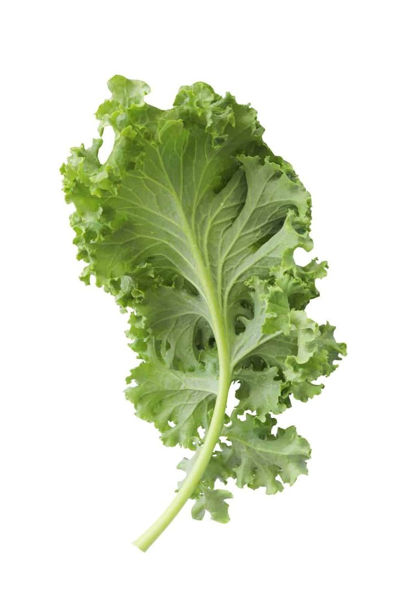
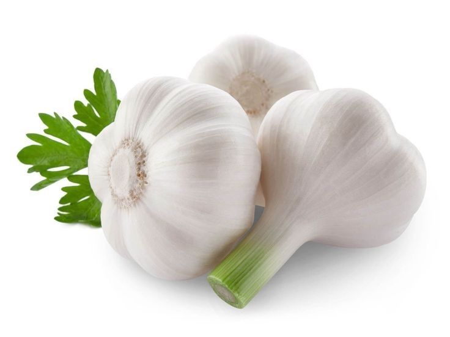

Farmers Market

Visit our Farmers Market section to find locally sourced, fresh vegetables straight from the farm.
Organic Garden

Explore our Organic Garden for a selection of pesticide-free, organic vegetables. Rich with protein and vitamins
Greenhouse

Check out our Greenhouse for year-round availability of seasonal vegetables grown in controlled environments.

Tomato 100g
Fresh and juicy tomatoes for salads, sauces, and more.
Rs.190.00

Carrot 100g
Carrots: Crunchy, sweet root vegetables rich in vitamin A.
Rs.150.00

Broccoli 100g
Nutrient-packed broccoli florets for stir-fries, soups, and salads.
Rs.200.00

Pumkin 200g
Pumpkin: Versatile, orange squash with sweet flavor and dense flesh.
Rs.350.00

Beetroot 250g
Beetroot: Deep red root vegetable with earthy flavor and vibrant color.
Rs.345.00

Ladies fingers 100g
Ladies' fingers: Long, slender green vegetable also known as okra.
Rs.140.00

leeks 250g
Leeks: Mild-flavored, onion with long white stalks and green leaves.
Rs.160.00

Corn 500g
Corn: Sweet, yellow vegetable with kernels on a cob.
Rs.450.00

Mushroom 200g
Mushrooms: Fungi with various shapes, textures, and flavors used in cooking.
Rs.360.00

Onion 1kg
Onion: A pungent, bulbous vegetable widely used in cooking worldwide.
Rs.650.00

Beans 100g
Beans: Legumes with various colors and flavors, rich in protein and vitamins.
Rs.250.00

Potato 1kg
Potato: Versatile starchy vegetable, available in various colors and textures.
Rs.550.00
Cabbage 250g
Cabbage: Crunchy, leafy vegetable with a mild, sweet flavor. rich in protein.
Rs.280.00

Kale 250g
Kale: Nutrient-rich leafy green vegetable with a slightly bitter taste.
Rs.320.00

Cucumber 250g
Cucumber: Refreshing, crunchy vegetable with high water content and mild flavor.
Rs.170.00

Garlic 1Kg
Garlic: Pungent bulb used for flavoring in cooking, known for health benefits.
Rs.750.00